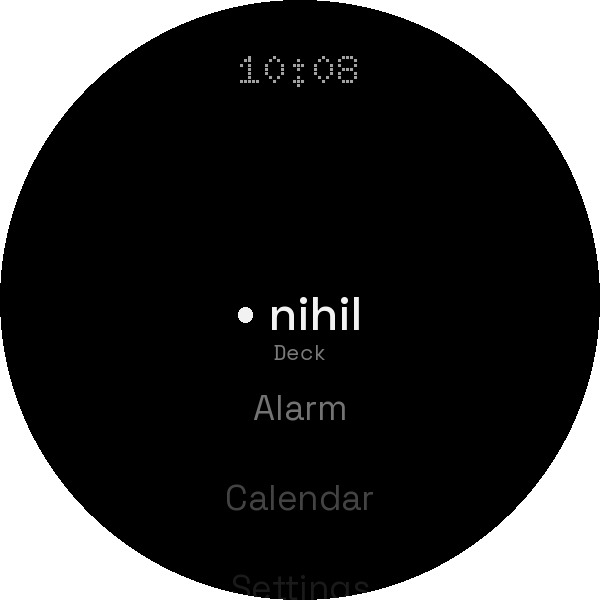
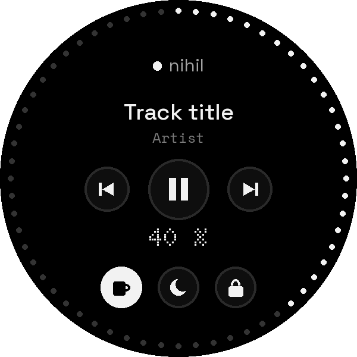

ex nihilo
A dot‑matrix launcher for Wear OS
The same language on the wrist: the time in dots, light on the edge, the apps grey until one is chosen, and the watch as a deck for your computer. Open source, no ads, no tracking.
The face
NIHIL's watch face is in Watch Face Format, as Wear OS wants faces now: no code, a file the watch draws itself, in ambient too. The time is in dots, the day under it in Space Mono; sixty LEDs go round the edge, every one there and the unlit faintly. Tap the face anywhere and NIHIL opens.
The time in dots
Doto, the desktop's dot matrix, as big as the face allows. In ambient, the time and the day alone, dimmed.
Light on the edge
The seconds' LED runs round the edge as the desktop's light runs round its frame; a LED over the time stays lit while something is unread. Tap the watch above.
Red only to interrupt
The battery is ten LEDs under the day. They turn red at 15 % or less, the only red on the face.
Grey until it's chosen
NIHIL on the watch is a list: the computer's deck first, then the watch's apps by name. The bezel or the crown turns it, a rotating bezel, a touch bezel or a crown alike, with a tick as each one passes; what stands in the middle is lit in ink and the rest stays grey, as the desktop's apps do. Over it, the time in dots.
Wear OS keeps its own launcher, so NIHIL opens from its face, from its icon, or from a button where the watch lets you choose one.


The watch as a deck
Paired with NIHIL on your computer, the watch plays and skips its music, turns its volume with the bezel or the crown, which the LEDs round its edge show, turns its caffeine and its night light, and locks it. While the deck shows, it asks the computer what plays every few seconds, as the phone does; the phone, a tablet and the watch can all be decks of the same computer at once.
A watch has two ways to the computer: the phone's Bluetooth, which Wear OS uses on its own, and Wi‑Fi, which it brings up when an app asks for it. NIHIL tries the first; when the computer isn't there, it asks for Wi‑Fi, and lets it go when the deck closes. Its network test measures both, and how long the computer takes to answer on each.
Nothing else
NIHIL talks to the computer it was paired with, on your own network, and to nothing else. The computer reaches the watch only through adb: the pairing goes in through a door that answers adb's shell and no app on the watch. The token is the watch's own, encrypted with a key that never leaves the Android Keystore, and out of backups.
What it asks for
| Permission | For |
|---|---|
| Internet | The deck: the computer it was paired with, and nothing else |
| Network state | Which way the computer is: Bluetooth through the phone, or Wi‑Fi |
| Change network state | Asking for Wi‑Fi when Bluetooth doesn't reach the computer |
Install
There is no store: the APKs go on the watch with adb over Wi‑Fi, as any app from outside Google Play does. On the watch, Settings, About watch, and tap the build number until the developer options appear; in them, ADB debugging and Wireless debugging, on the computer's Wi‑Fi. Then, from NIHIL for Wear OS on the computer, with the deck on in Preferences, Devices:
nix develop
tools/watch pair IP:PORT CODE # Wireless debugging, Pair new device
tools/watch connect IP:PORT # the address on Wireless debugging's screen
tools/watch install # NIHIL and its watch face
tools/watch invite # the watch pairs with this computerThen hold the watch's face and choose NIHIL's. Wear OS 4 or newer, on any watch: a crown, a rotating bezel or a touch bezel turn it alike.